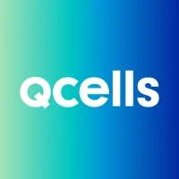

Temporary text for gameplay systems, cross-discipline collaboration, debugging, optimization, and release support.
Software Engineer
Kevin Kim
Software engineer focused on building practical web applications, internal tools, automations, and reliable systems that turn ambiguous problems into clear workflows.
Graduated
Boston University
B.A. Computer Science, 2024
Location
Atlanta, GA
Full-stack products
Interfaces, APIs, data flows
Automation
Less manual work, fewer misses
Operational polish
Fast, clear, maintainable systems
Experience

- Delivered 150+ software projects in an agile Spring MVC environment with 100% on-time completion.
- Refactored the WebSocket service with multi-threading and parallel processing, reducing incoming API load by 22%.
- Optimized the main alert-handling service by reducing transaction latency by 90% through APM-driven thread analysis, manual Oracle Database commits, and streamlined message dispatch.
- Led CI/CD pipeline updates with Jenkins and validated secure deployments via Swagger/OpenAPI endpoints.
- Developed a React.js, Spring Boot, and MySQL web app for technician service workflow, scheduling, and ticketing.
- Automated client service alerts with Twilio SMS/Voice API, reducing manual coordination workload by about 20%.
- Used Cypress and Selenium for automated testing and conducted UAT for production readiness.
- Engineered an inventory management REST API using SAP interfaces, improving tracking accuracy and delivering 12% cost savings.
- Created a modular vehicle library to streamline new vehicle creation and improve code reuse.
- Refactored and optimized multiple game object components, cutting average memory usage by 35%.
- Optimized game systems and UI with Lua and Rojo to support high concurrent player activity.
- Iterated on interface design from community feedback to improve user experience.
Projects
JobNow Application
Built a job board web application to connect job seekers with relevant opportunities, with automated endpoint validation and external job-posting aggregation.
Safe Flight Application
Developed a travel safety web application that scores destinations using real-time weather, crime, conflict, and political risk data.
Nightfall Video Game
Developed a round-based zombie shooter with scalable game systems, dynamic NPC behavior, pathfinding, and secure server-side store validation.